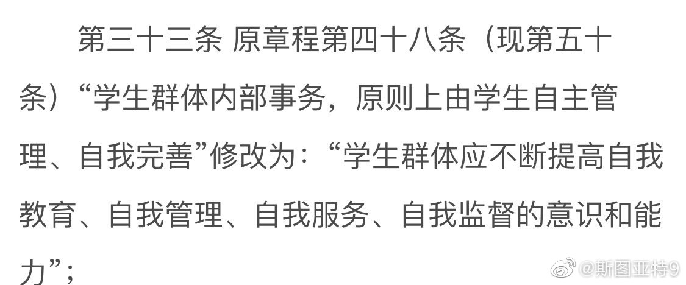
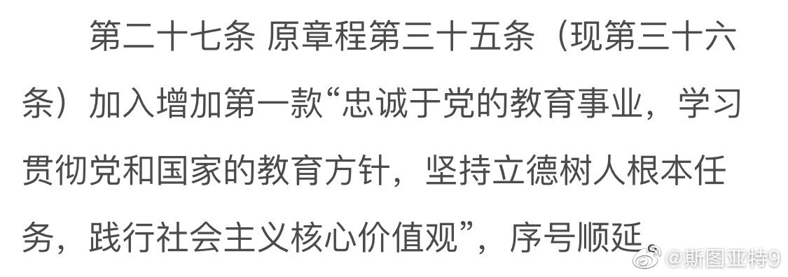

斯图亚特9
2019-12-17
复旦都改了，清华北大应该也不远了吧。各位社会主义核心价值观秉承的怎么样？
斯图亚特9
2019-12-17
It made my day!
@王小峰_带三个表
:
鲍里斯·约翰逊此生最大的遗憾就是没有成为摇滚歌星，但是他发明了一种新的吉他演奏方法。
斯图亚特9
2019-12-17
看了看复旦大学的章程修改。除了序言外，很多条目的修改也很让人深思啊：
网页链接

